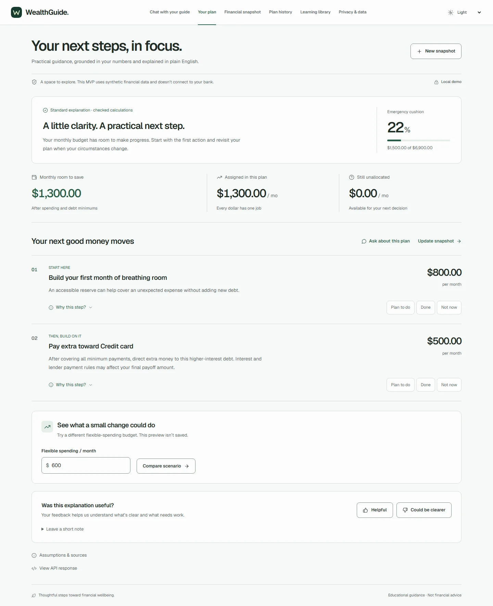
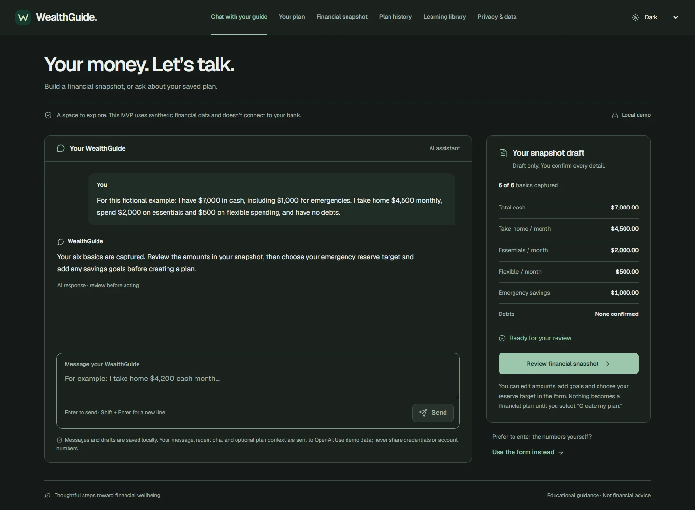

Featured project
WealthGuide
A financial snapshot in.
A clear next step out.
A full-stack personal finance guide with conversational intake, checked calculations, and plain-language AI explanations.
- React + TypeScript
- FastAPI
- PostgreSQL
- OpenAI
- Docker
Local demo with synthetic data. Not a hosted financial service.


How I built it
The model explains. Python calculates.
Deterministic decimal rules decide allocations and priorities. The AI gathers a draft and explains the result, without changing the amounts.
A conversation, with a review step.
Users can build a snapshot through chat or a form, review every detail, then ask questions about a saved plan.
Built to be checked.
PostgreSQL stores versioned plans, chat and feedback. Session ownership, retries, export and deletion are covered by 23 backend checks and 6 desktop/mobile browser checks.
Read the calculation rules